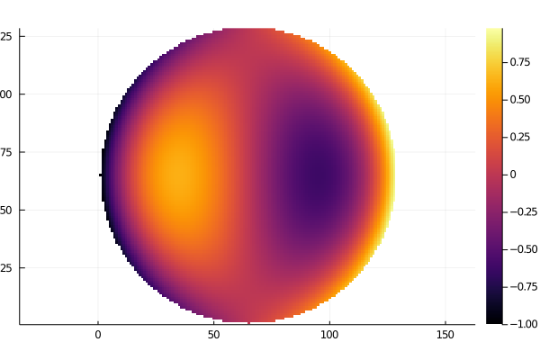

Zernike
The Zernike polynomials are a family of orthogonal polynomials over the unit disk, $\rho \in [0,1]$, $\theta \in [0, 2\pi]$. They were originally defined in "Beugungstheorie des schneidenver-fahrens und seiner verbesserten form,der phasenkontrastmethode", F. Zernike (1934). A more typical citation is "Zernike polynomials and atmospheric turbulence," Noll (1976).
The implementation in this library utilizes the property that, given a Jacobi polynomial of order $n$ with weights $\alpha,\beta \equiv P_{n}^{(\alpha,\beta)}(x)$, the radial component of the Zernike polynomials for argument $\rho$ is $P_{(n-m)/2}^{(0,|m|)}(\2rho^2 -1)$. This is combined with a simple $\sin(m\theta)$ or cosine equivalent, depending on the sign of $m$. The implementation here reflects that.
Usage
The Zernike usage follows from the jacobi one, the function should be called on arrays, i.e. without dot syntax.
using OpticsPolynomials
using GridCreation
using Plots
x, y = mkCartVecs(1/64, 128); # -1,1
r, t = cartVecsToPolarGrid(x,y);
data = zernike(3,1,r,t;norm=false);
data[r.>1].=NaN; # mask outside unit disk for visuals
heatmap(data, aspect_ratio=:equal);
png("coma-heatmap");/home/travis/.julia/packages/GR/BwGt2/src/../deps/gr/bin/gksqt: error while loading shared libraries: libQt5Widgets.so.5: cannot open shared object file: No such file or directory connect: Connection refused GKS: can't connect to GKS socket application GKS: Open failed in routine OPEN_WS GKS: GKS not in proper state. GKS must be either in the state WSOP or WSAC in routine ACTIVATE_WS

Core Functions
OpticsPolynomials.zernike — Functionzernike(n, m, ρ, θ[; norm])Zernike polynomial of radial order n and azimuthal order m, evaluated at the point (ρ, θ). No normalization is required of (ρ, θ), though the polynomials are orthogonal only over the unit disk.
norm is a boolean flag indicating whether the result should be orthonormalized (scaled to unit RMS) or not.
The zernike polynomials' radial basis is a special case of the Jacobi polynomials under the transformation n_jacobi = (n-m)/2, α=0, β=|m|, x=2ρ^2-1.
OpticsPolynomials.zernike_norm — Functionzernike_norm(n, m)Norm of Zernike polynomial of radial order n, azimuthal order m.
The norm is the average squared distance to zero. By multiplying a zernike value by the norm, the term is given unit stdev or RMS.
Index Conversions
This package includes a suite of functions for converting between various indexing schemes. All functions work for arbitrary order.
Noll
OpticsPolynomials.zernike_noll_to_nm — Functionzernike_noll_to_nm(j)Map j Noll index to ANSI (n,m) indices.
Fringe
OpticsPolynomials.zernike_fringe_to_nm — Functionzernike_fringe_to_nm(j)Map j Fringe index to ANSI (n,m) indices.
OpticsPolynomials.zernike_nm_to_fringe — Functionzernike_nm_to_fringe(n, m)Map (n,m) ANSI indices to a single fringe index.
ANSI Z80.28:2004
OpticsPolynomials.zernike_ansi_j_to_nm — Functionzernike_ansi_to_ansi_j(n, m)Map (n,m) ANSI indices to a single ANSI j index.
See also: - zernike_nm_to_ansi_j (reciprocal of this function)
OpticsPolynomials.zernike_nm_to_ansi_j — Functionzernike_nm_to_ansi_j(n, m)Map (n,m) ANSI indices to a single ANSI j index.
See also: - zernike_ansi_j_to_nm (reciprocal of this function)
Utilities
OpticsPolynomials.zernike_zero_separation — Functionzernike_zero_separation(n)Minimum zero separation of Zernike polynomial of radial order n. Useful for computing sample count requirements.